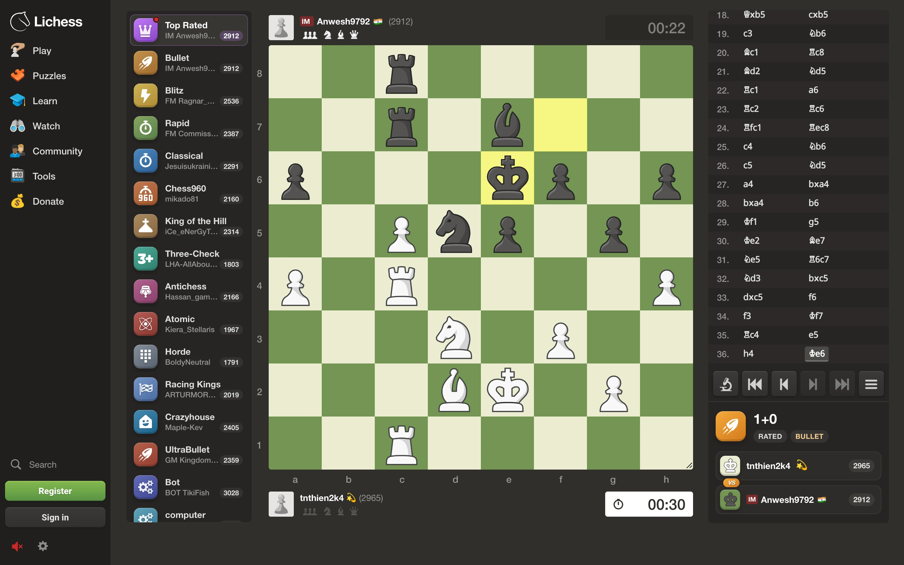

lichess.org
/tv

Still Lichess
New look,
same Lichess
Your account, your games, every feature. Only the look and the sounds change.
Familiar sounds
The right one for every move, check and capture
Nothing to set up
Install it, open lichess.org, play
Private by design
No tracking, no data collected